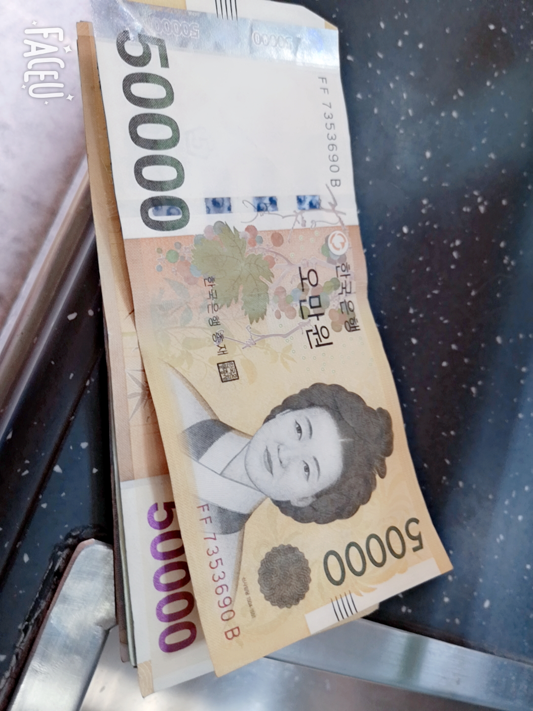
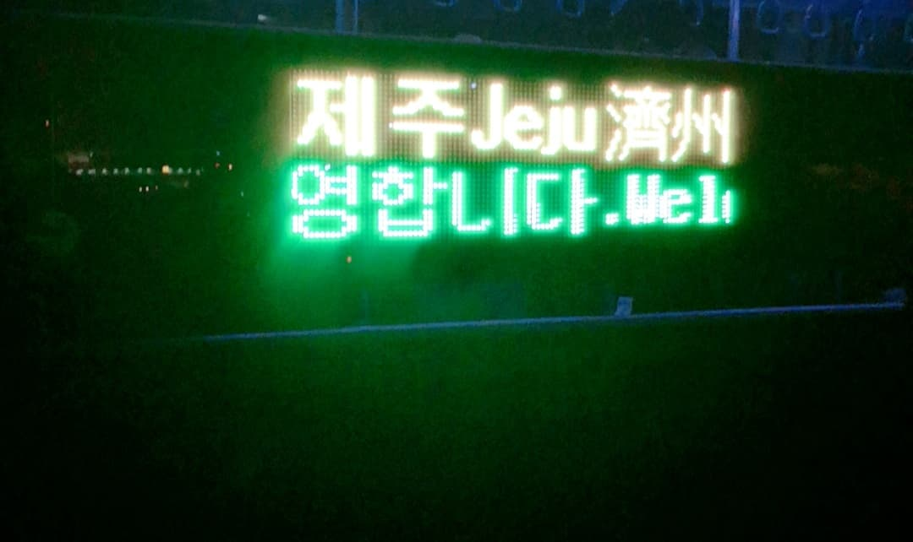
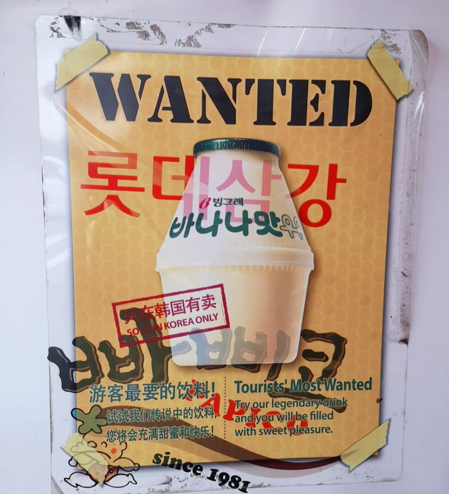
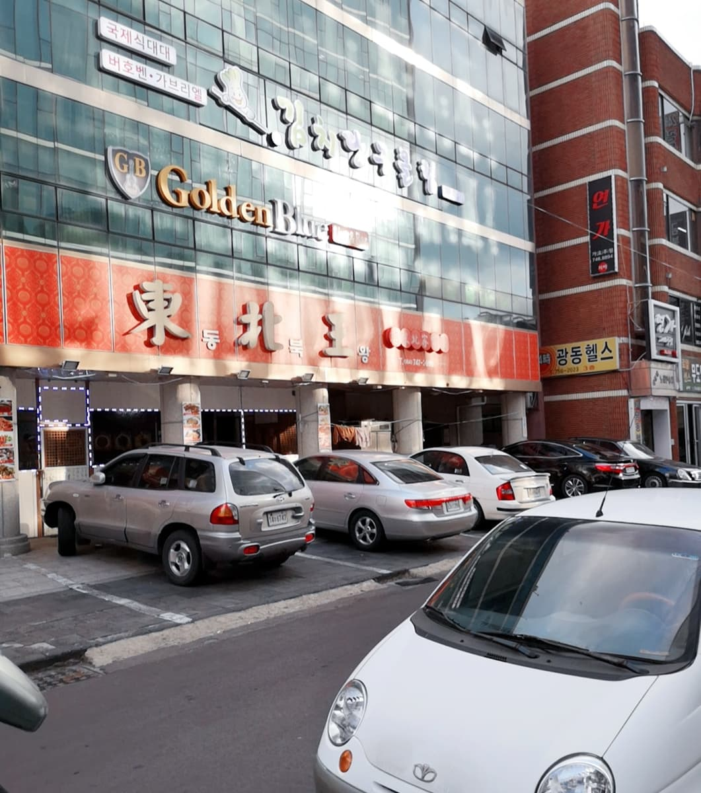
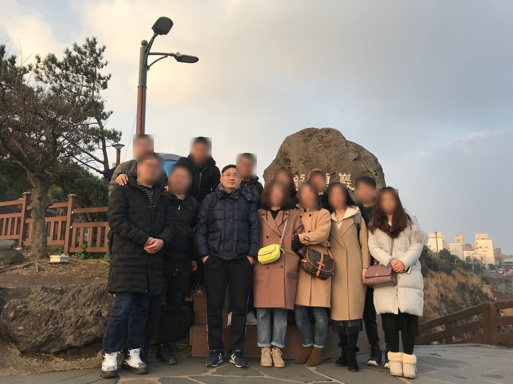

济州岛：一座火山岛，一间免税店，和一代人的青春记忆
Jeju — a volcanic island, a duty-free store, and a generation's youth memories.

（2019 年 · 韩国 · 济州岛）
汉拿山：整座济州岛，其实就是一座火山
济州岛当地有句话叫「济州岛就是汉拿山，汉拿山就是济州岛」——这句话不是修辞，是地质事实。汉拿山海拔 1950 米，是韩国境内最高峰，本身是一座休眠火山，末次喷发记录在 1007 年，整座济州岛正是靠着它历次的火山活动才堆积隆起而成。山顶的白鹿潭是约 25000 年前火山喷发形成的火山口湖，周围还散布着 386 座大小不一的寄生火山锥，整座山连同济州岛的熔岩地貌一起，1970 年被划为国立公园，后来又被联合国教科文组织列为世界自然遗产。爬这座山最特别的地方，是山体从山脚到山顶横跨了近 1500 米的海拔落差，一天之内能同时感受到温、热、凉、冷四种气候带——韩国人形容这是「一日历四季」，这种垂直气候带压缩在一座山里的体验，在东亚这个纬度范围内也不算常见。


新罗免税店：三星集团旗下，靠「落地即免税」撑起的购物帝国
新罗免税店是三星集团旗下新罗酒店的业务板块，1979 年由三星集团创始人李秉喆创立，济州店是济州岛规模最大的免税商场，汇集了香奈儿、爱马仕、迪奥这些国际大牌，也少不了后（WHOO）、雪花秀这些韩国本土高端化妆品品牌，还有专门迎合中国游客口味的周大福、MCM 专柜。这类免税店模式在济州岛这样的旅游海岛上格外发达，本质上是把「落地免税购物」变成了旅游目的地经济的一根重要支柱——游客来这里不只是看风景，买东西本身就是行程的一部分，这也是为什么济州岛能在旅游收入之外，靠免税零售业撑起相当可观的经济体量。


触发回忆的，是那些藏在本地生活里的「韩流」痕迹
你说在济州岛看到了很多 80 后当年接触过的「韩流」痕迹，这一点其实能串联到一条很清晰的国家战略线索上。1998 年，金大中就任韩国总统后正式提出「文化立国」战略，把文化产业列为 21 世纪韩国的国家重点发展方向，此后历届韩国总统——从李明博的「文化强国」战略，到朴槿惠亲自部署对欧美、亚洲、其他市场的「韩流」输出细分策略，再到文在寅提出「以文化强国引领经济强国」——几乎无一例外地延续了这条国策，这才有了 80 后这一代人当年在电视里追的韩剧、听的 K-pop、模仿的偶像团体。这不是一场自然发生的流行文化风潮，而是一个国家层面持续了二十多年的产业战略执行结果。
数字上也能看出这条产业线有多扎实：2018 年韩流带来的总出口额是 100.63 亿美元，2019 年——也就是你去济州岛这一年——涨到了 123.19 亿美元，同比增长 22.4%。韩国文化体育观光部还测算过一个挺惊人的联动效应：文化内容出口每增加 100 美元，能带动韩国商品出口额外增加 412 美元，超过一半的韩国企业销售额都能搭上文化产品出海这趟顺风车。韩国政府为此专门设立了文化产业振兴院，在北京、东京、伦敦、洛杉矶等地建了文化商务中心当「桥头堡」，甚至专门花五个月时间说服埃及国家电视台引进《蓝色生死恋》，剧集播完后收到了 400 多个埃及观众的来信和电话——这大概是韩国「文化即经济」这句口号最直接的一次验证。
从造星模式看韩国文化产业的「体系化」
韩国偶像产业还有一个很值得记录的特点：从一开始就不是靠单个明星「火」起来，而是靠经纪公司整建制地做「团队化造星」——用固定的选拔、训练、包装流程，批量生产偶像组合，这套体系后来又演化出「韩星 + 外籍成员」的混搭策略，让组合本身自带跨国传播的基因。这种「标准化 + 工业化」的造星逻辑，某种意义上和你之前在诺托、宝马这些制造企业身上看到的体系化打法是相通的——韩国把「造一个明星」这件事，也做成了一套可以复制、可以规模化输出的产业流程，而不是依赖偶然的个人天赋。
自然靠时间，商业靠模式，文化靠耐心——能让别人心甘情愿买单，才是"输出"这件事能达到的最高段位。
——董立鑫 海鑫汇创始人兼执行总裁，新加坡世贸秘书长兼首席运营官
本文整理自董立鑫（Bruce Dong）海外产业考察记录，首发于海鑫汇。